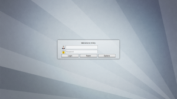
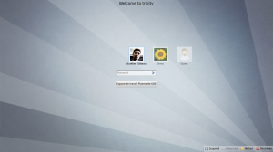
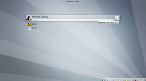
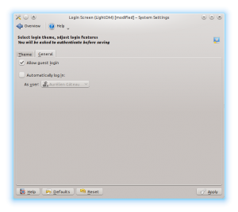
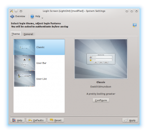

During this Ubuntu cycle I have been working on-and-off on LightDM, mainly helping out David Edmundson on liblightdm-qt (the Qt wrapper for LightDM library), and the LightDM KDE greeter. The initial, quite ambitious, plan was to try to ship Kubuntu 12.04 with it by default. We quickly realized that would not happen, but we wanted to at least ensure LightDM KDE would be in a usable-enough state to be included in Ubuntu 12.04 archive.
So here it is, release 0.1.0 of this new greeter, featuring:
You can get the tarball from KDE download server or clone the GIT repository. (Note that you need LightDM itself for the KDE greeter to work. The LightDM daemon and Qt libraries can be downloaded from the LightDM project page). Kubuntu 12.04 users can get it with "apt-get install lightdm-kde-greeter".
It still has some rough edges (it's a 0.1.0 release after all!), but I have been using it for a few months now without trouble.
Enough talk already, here comes some screenshots:
"Classic" theme:
"User Bar" theme:
"User List" theme:
System Settings module:
 We hope you like it!
Update: 0.1.1 is out, fixing an issue with user pictures not appearing in "User Bar" and "User List" themes. You can get it from download.kde.org.
{kind=link}
{kind=link}
{kind=link}
{kind=link}
{kind=link}